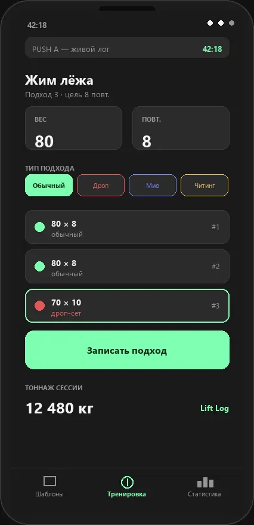

Журнал подходов: обычные, дроп, мио, читинг
Живая тренировка в зале — вес, повторы и тип сета за пару касаний.

Типы подходов в одном логе
Многие дневники пишут только «вес × повторы». В Lift Log у подхода есть тип — это важно для силовой практики и честной статистики рабочего веса.
- Обычный — базовые рабочие подходы
- Дроп-сет — снижение веса без длинного отдыха
- Миорепы — короткие серии с минимальным отдыхом
- Читинг — подходы с помощью, отдельно от «чистых»
Чем отличаемся от конкурентов
Браузерный «дневник тренировок» на britetodo удобен как черновик, но без нативного лога и типов сетов. GymPad и MyFoodBro тянут питание и облако. Lift Log фокусируется на силовом журнале подходов офлайн.
История сессий
Завершённые тренировки сохраняются локально — можно вернуться к тоннажу дня и составу подходов.